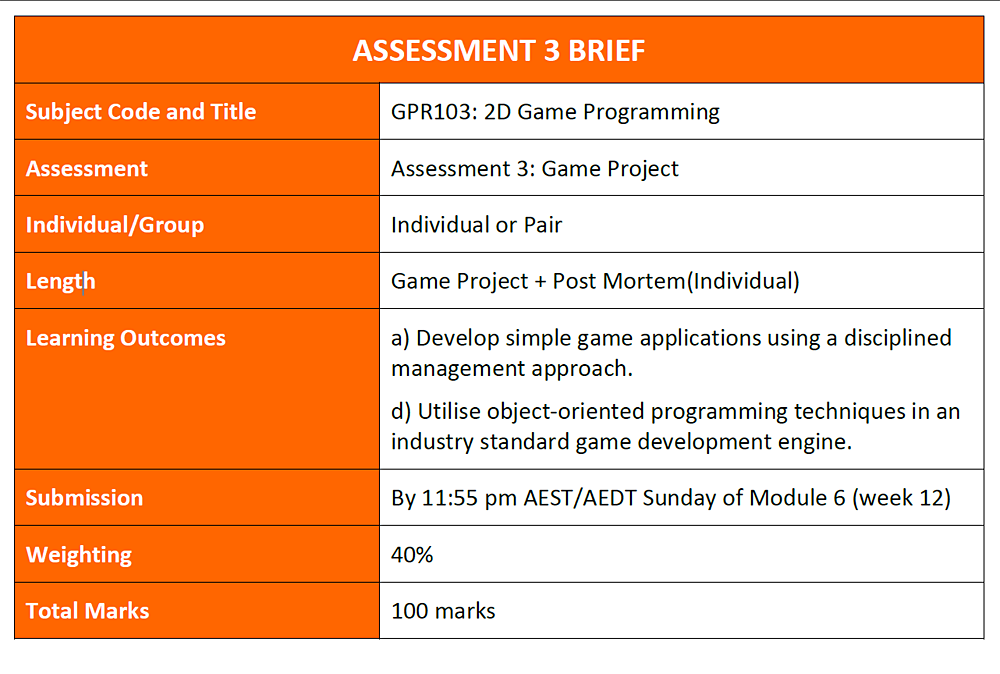
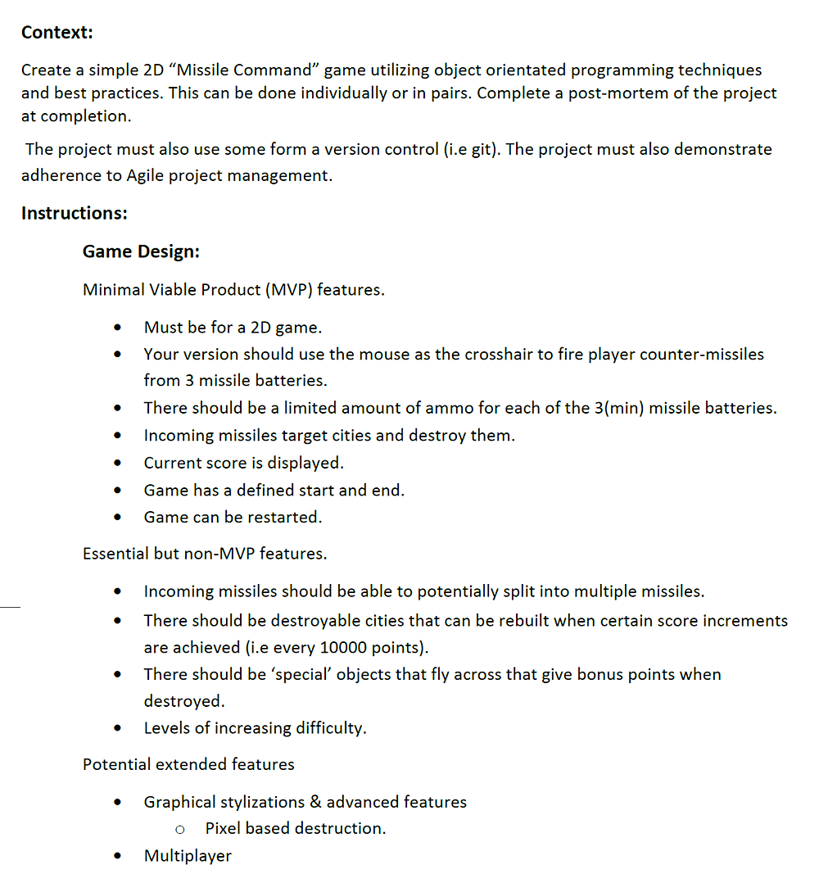
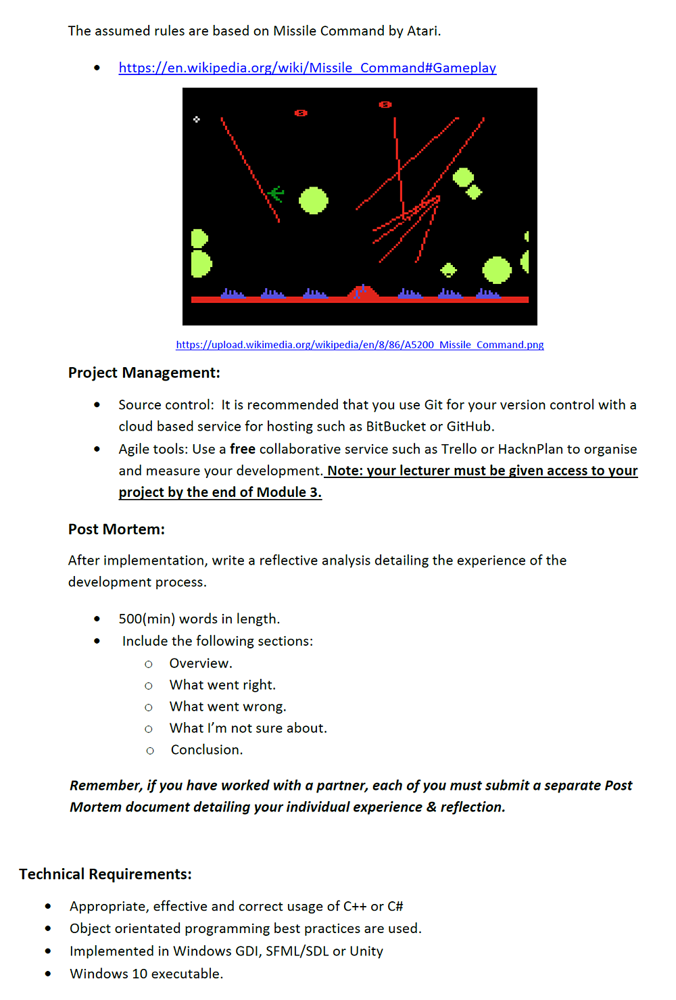
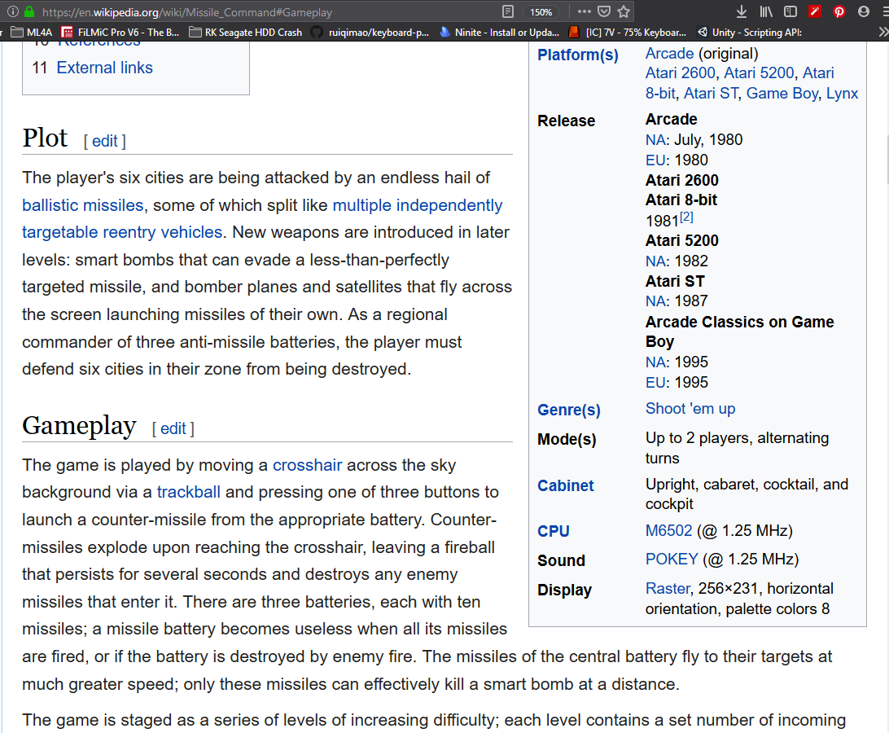
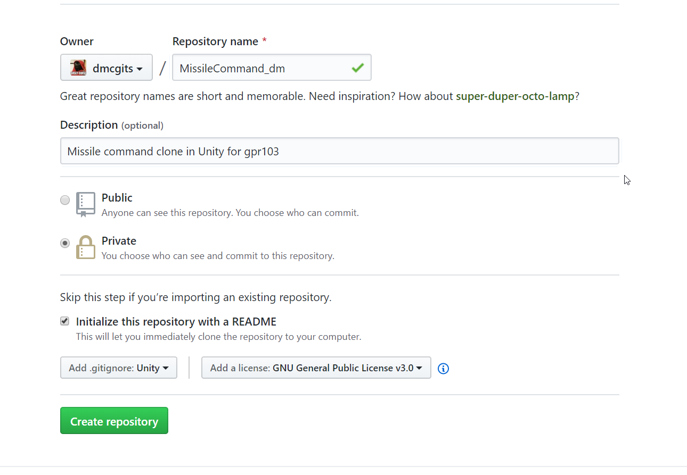
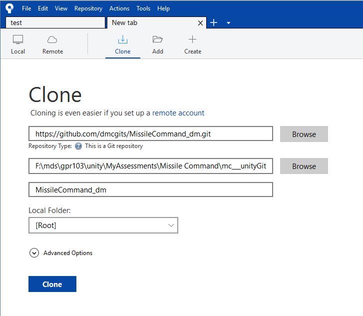

Week 9
Recap A2.
Look at A3, get a base.
- Week 9
Your todos for next week
The Unity3D College videos below are more advanced than things I've shared before, but you don't have to understand every part of his videos to benefit.
-
Set up your hacknplan, message me a screenshot on blackboard.
-
Watch finding objects video
-
Prefabs! The new method is "nested" prefabs, meaning you can have them within one another.
- This is an initial intro to prefab concepts by Unity. If you don't already have an idea what a prefab is, look here before you watch the next two videos. The parts on editing after 0:37 are out of date.
- As they're now nested, watch this great video on their usage by Unity College 3D.
- A unity sponsored and very informative intro to nested prefab workflows by Brackeys. Awkward intro (0-0:36) skipped.
- I haven't watched this yet but I watch his videos on everything, he's great. prefabs 101 on Unity3D College
-
If you like Unity3D College guy, watch his top unity mistakes video and some others.
Assessment 2
Questions
A look at my old implementation
Good/bad.
Assessment 3
Missile command! Using what we've learnt, and keeping our work safe in Git.
The game in action: The atari home version was a little under powered, so here's part of a guy's run on the arcade machine. It's a bit potatocam but the smoothness of the arcade version and the sounds come across. https://youtu.be/PKUDCPHlCvI?t=43
Let's do a quick read through, then we'll really dig into it.



Game Play
Visuals: The arcade version again: https://youtu.be/PKUDCPHlCvI?t=43
Play: The brief contains a link to the wikipedia entry for Missile Command where the stages of gameplay and the rules are outlined.

Rules of the game on wikipedia
Breaking down the assessment in bullet points
This is my listing of the assessment in my language for me. You should do the same, and not treat this bullet list as the brief.
Deliverables, when's it due
- Create a game: Missile Command
- work as a pair or individually
- Due Sunday end of week 12, 11:55pm. 1st Sept.
- Write a post mortem
- Use git!
Minimum Viable Product
- Use techniques and workflows Danny teaches in class via examples and lectures.
- 2D game. Sprites.
- your mouse is the target, and you fire counter-missiles from 3 missile batteries
- Use each mouse button (1,2,3) to control each separate battery. left click shoots left battery and so on.
- Limited amount per each of the 3 batteries (10 shots)
- Alien missiles target cities directly for destruction, not rando. They destroy cities in one hit.
- There is a score and it is displayed.
- Game has a start (click to start)
- Game has an end (no cities left)
- Game can be played again without closing and reopening.
Extra features to get beyond a credit.
- Alien (incoming) missiles can split into multiple missiles
- Every 10000 points you are given a replacement for destroyed city
- Special objects (enemy bogeys) fly across the screen and can be destroyed for bonus points
- Levels of increasing difficulty
Potential extended features
Cool feel stuff like camera shake and pixel destruction and sound.
Cloning missile command
Missile command is a game that was made with gameplay and feel in mind. The game didn't follow what was codeable: the code serves the game.
For this you can relax and put aside the game design side of the course, and just put on your gameplay coder hat. We're attempting to reproduce the feel and timings, the rules of the original, and to unity to that purpose.
You have a near perfectly designed game. Can you, as a programmer, implement it?
DELIVERY REQUIREMENTS
- Use Unity 2019.1.x. I believe the labs mostly have 2019.1.10 installed. Try not to go more recent than that, though it shouldn't make a huge difference.
- Click here to install 2019.1.10 with Unity Hub.
- If you use 2018.2 (as we did previously) you'll be very confused because prefabs, which you will need, work differently now. TextMeshPro too is handled a bit differently. Save the stress, use 2019.1.x.
- DO NOT use Unity 2019.2.x. Things will change in unpredicable ways and you have no idea if it will run when I mark your assessment.
- Name your project for delivery from the start. GPR103_Lastname_Firstname_MissileCommand. Use it as your git repo name too. We'll do this tonight.
- Pairs could go with GPR103_Lastname_and_Lastname_MissileCommand lawyer style.
- Use git!! Then no one will have to send messages about losing files at the end or wishing they'd stopped before x or y happened. That'll also mean more marks because you submit your best work.
How to submit
- Right click the assets folder in your project view
- Open in explorer
- Use the up arrow next to the explorer address bar (or press alt+up arrow to go to the folder above, containing your unity project folder.
- Right click the project folder and either
7Zip->Add To GPR103_Smith_John_MissileCommand.7zorSend To -> Compressed (zip) folder. I prefer 7z because it's smaller and you'll have a better chance of uploading a smaller archive.
Gameplay
https://en.wikipedia.org/wiki/Missile_Command#Gameplay
A few design points:
- One trackball, 3 buttons
- 3 batteries have 10 missiles each, each controlled by one button.
- central battery is fastest
- If you're out of missiles before the attack stops, you must watch helplessly.
Getting started on bigger projects
Before we get to any coding questions on a big project, we have to be prepared for the different kinds of files we're going to be creating.
Like cleaning up any space, it's way quicker when there's a set place to put things.
Folder structure
I expect to be
- editing images
- downloading resources like graphics, fonts and maybe sounds
- working in a git repo
- Probably writing a few plain text files for notes, pseudocode etc.

- docs___mc
- photoshop___mc
- resources___mc or downloads___mc
- unityGit___mc
Git project
We'll set up a project on Github and call it MissileCommand_DM where DM is your initials.
- Add a readme, a Unity .gitignore file, make it a private repo.

Next, clone it using SourceTree into the unityGit___mc folder.

Path is the https address from git, folder is unityGit, next field is name
Create your unity project
- Add a new 2019.1.x project
- Select Unity 2D
- Choose the the unityGit___mc folder
- Name the project so it's ready to zip for permission
- GPR103_Mcgillick_Danny_MissileCommand
Push it back to Git
- Changes appear in sourcetree
- Stage all changes
- Commit with a message like "Adding blank unity project"
- Push to github
- Visit github in the browser to see your files are there
Art
Here's some pixel art cut from the arcade/atari original. They're tiny, so you want to scale them up in photoshop or krita using the nearest neighbour resampling option. Otherwise you can bring them into Unity at this tiny size and set filtering to point.
More screens to pull from:


Can these screens help us plan?
Sometimes we can't solely create everything in our game model/manager and adjust the stage to suit. It's handy to lay out things visually.
Figuring out the things in our game
First here's a drawover of things we might see in this game. This picture isn't just a lecture aid, I'll draw over a design like this to see the game world itself, rather than the final graphics. Remember we're simulating a world, and the job of the graphics is to communicate that world. How will that world be structured?

Luckily you don't have to be an coder to figure out the things in your game: just a gamer. Imagine the game playing, and think about the things that happen. Write down the things that do those things.
A partial list of them
- alienBatteries
- Grouped under stomething? Select a subset of arranged points, or generate random ones? Or pull from a level definition?
- playerBatteries
- cities
- AlienMissile
- PlayerMissile
- Planes
- ScoreText
- DefendPrompt
Later we'll look at how to find and these pre-layed-out elements. First we need a scene to work with.
Systems and Psuedocode
Before figuring out classes needed, write down all the systems you can think of in this game
- level setup and oversight: level manager. runs the model, starts stops game.
- game world model: contains entities and updates them, notifies listeners.
- Enemy attack spawner - wave
- incoming missiles
- planes
- player missile firing
- scoring system
- hud
- gameplay physics:
- enemy missiles colliding with explosions, cities
- planes being destroyed
Try writing basic pseudocode, just to get your brain going, starting with simplest form of game.